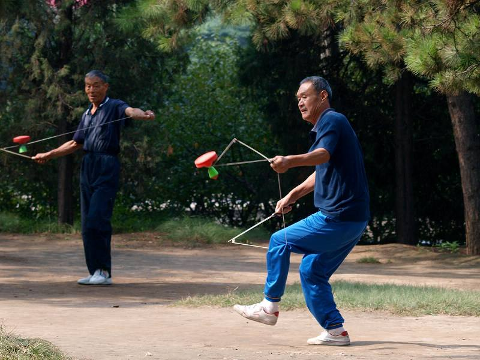
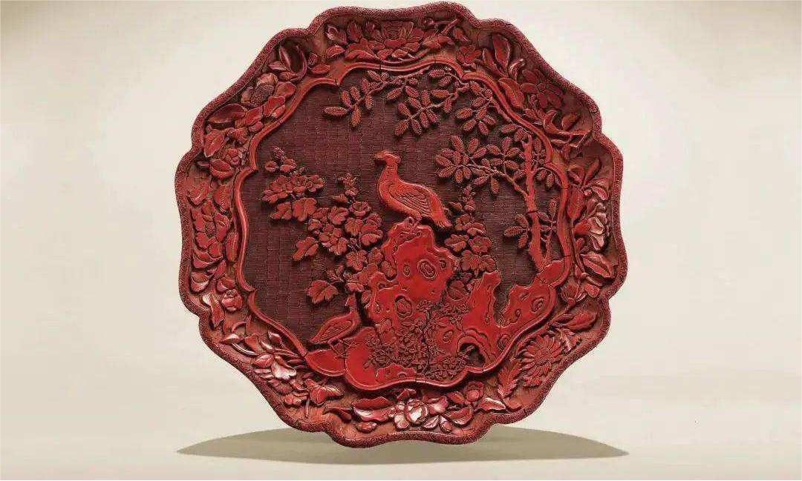
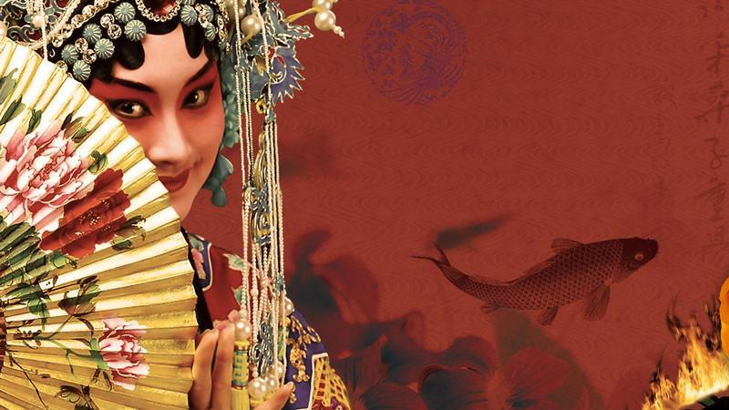

抖空竹
北京抖空竹是中国传统文化苑中一株灿烂的花朵。空竹古称“胡敲”，也叫“地铃’、“空钟”、“风葫芦”、“抖嗡”、“抖地铃”、“扯铃”等。
厂甸
厂甸庙会是北京市的传统民俗及民间宗教信仰活动。在旧京城的众多庙会中，惟有厂甸的庙会，不以庙为名，每年正月初一至初五这个时间段举行，规模最大、
京味最浓、最闻名遐迩和脍炙人口的。

北京雕漆
北京雕漆造型古朴庄重，纹饰精美考究，色泽光润，形态典雅，并有防潮、抗热、耐酸碱、不变形、不变质的特点。雕漆工艺是中国漆工艺的一个重要门类，
也是北京传统工艺美术的精华之一。

京剧
京剧，曾称平剧，亦称乱弹、国剧。我国知名戏曲剧种，中国五大戏曲剧种之一，场景布置注重写意，腔调以西皮、二黄为主，用胡琴和锣鼓等伴奏，被视为中国国粹，
中国戏曲三鼎甲“榜首”。京剧艺术博大精深，文戏武戏各美其美。京剧走遍世界各地，分布地以北京为中心，遍及中、国，成为介绍、传播中国传统艺术文化的重要媒介
。在2010年11月16日，京剧被列入“世界非物质文化遗产代表作名录”。
 北京非物质文化遗产
北京非物质文化遗产